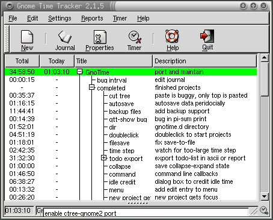
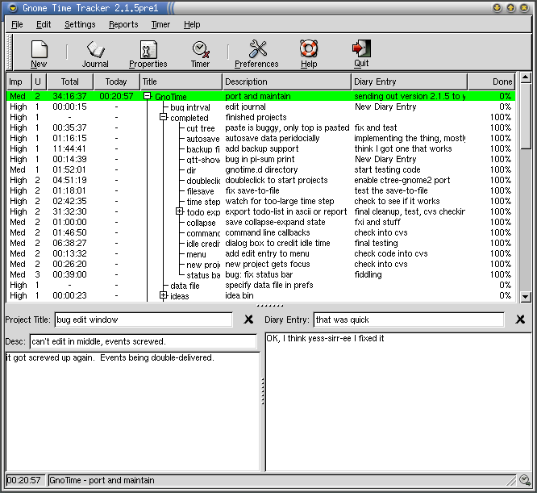
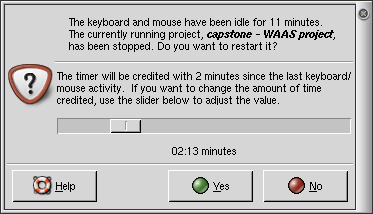
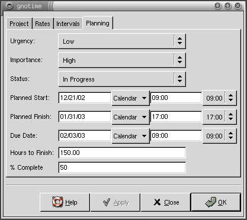
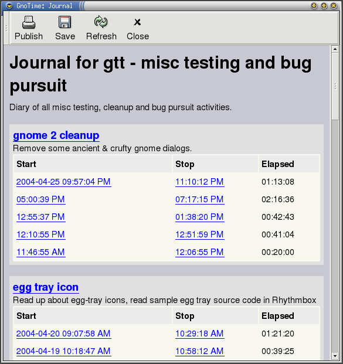
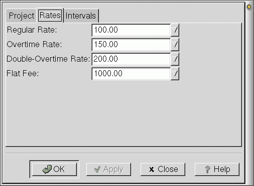
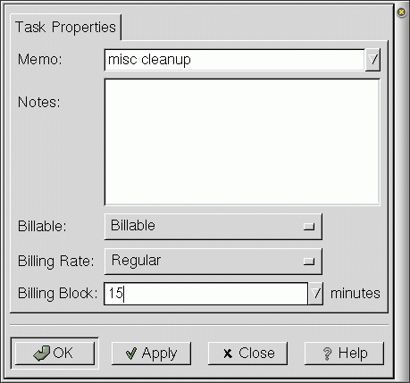
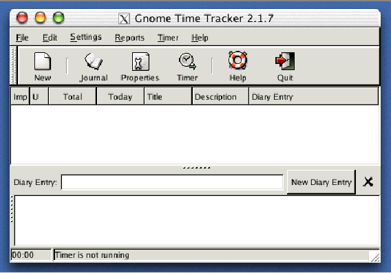

GnoTime: Keep your projects under "timing control".
TODO list / diary / journal tool
The main window screen, showing all-time and daily totals:
The same main window screen, but with additional columns enabled to show project status. Note the new notes-taking area at the bottom of the screen.
The inactivity popup dialog, which triggers when the keyboard and mouse has been idle some period of time. Note how this allows a project to be credited with an adjustable amount of time. Being able to adjust the time credited directly, without having to fuss with menus and GUI dialogs is a very handy feature when you are distracted by interruptions.
The dialog box for specifying project-planning status. The use of this dialog is optional, but can be useful for ranking the importance and urgency of to-do list items. Note the distinction between importance and urgency: An important task is one that must be done, sooner or later. An urgent task should be done as soon as possible.
Below is a view of the time report, as viewed by the built-in HTML viewer. Because this report is just plain HTML, it can be saved to a file, emailed, or posted to a web site. Here's the same report, as a web page.

Here are some other reports that GnoTime can generate:
All of the above reports are generated from report templates
written in HTML, with embeded markup to display the various
bits of data. This means that if you are knowledgable in
HTML you can readily modify these report templates, and
design your own reports. In particular, if you hate these
colors and style, you can change them as you wish.
When you view these reports natively in GnoTime, each of the
entries shows up as a hyper-link. You can click on each link
to bring up a menu, and then, from the menu, edit, add or
cut-n-paste entires. For example,
individual time intervals may be modified.
Per-project billing rates can be specified ...
As well as how an individual task should be billed.
Well, sort of. Here's a screenshot under Macintosh OSX Fink; unfortunately, this port was never finished/published.
